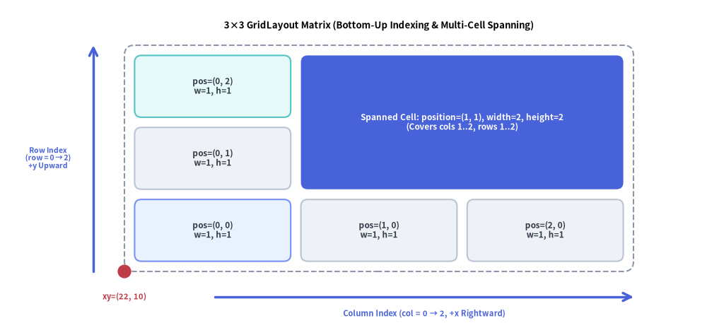
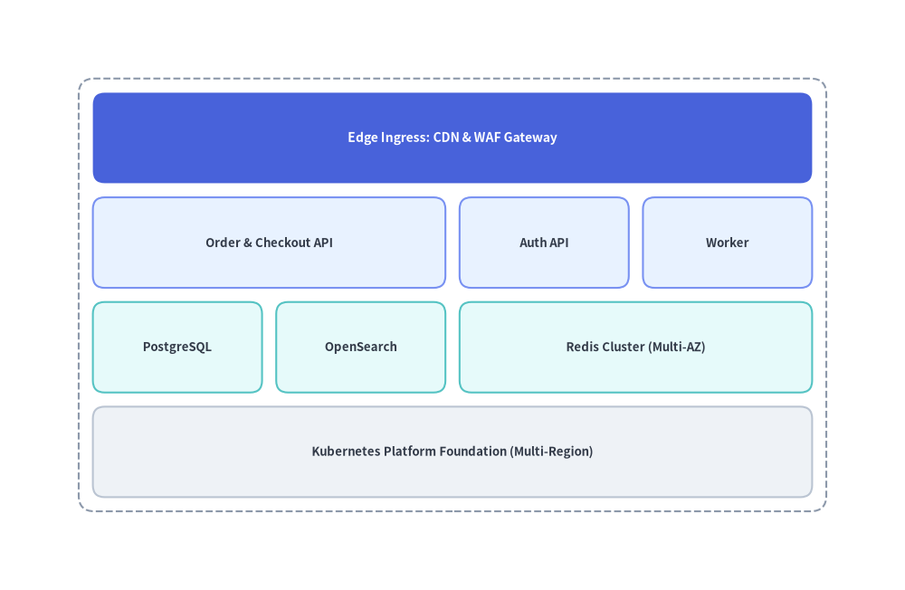
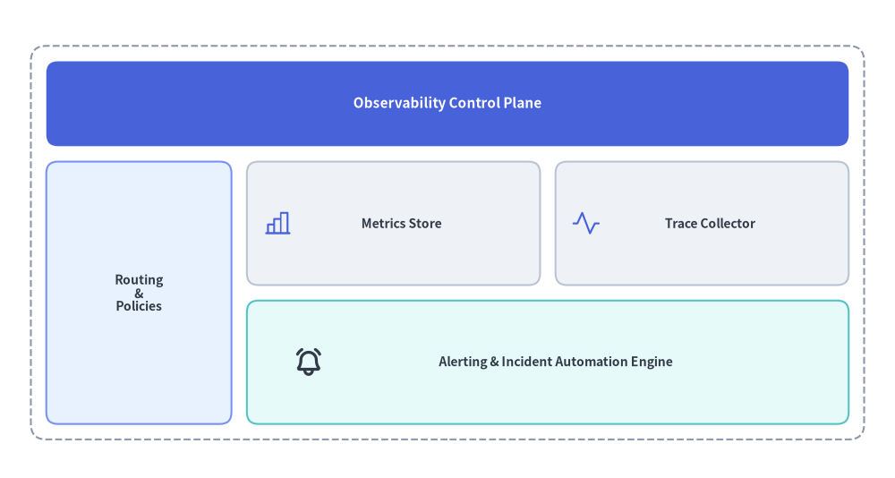

GridLayout
The GridLayout component positions cards and rectangular blocks across a uniform or flexible column/row matrix.
It supports multi-column and multi-row cell spanning, outer container borders, and proportional scaling—making it ideal for layered system architectures, service matrices, and executive dashboard layouts.

Source Code
from drawlib.canvas import save, setup
from drawlib.icons import phosphor
from drawlib.lines import line
from drawlib.shapes import circle
from drawlib.smartarts import GridLayout
from drawlib.styles import Styles
from drawlib.text import text
setup(width=126, height=62)
grid = GridLayout(
num_column=3,
num_row=3,
style=Styles.Neutral.patch(shape_r=1.2),
text_style=Styles.DarkBold.patch(text_size=10.0),
)
# Row 0 (Bottom Row)
grid.add(position=(0, 0), width=1, height=1, text="pos=(0, 0)\nw=1, h=1", style=Styles.PrimaryNeutral.patch(shape_r=1.2))
grid.add(position=(1, 0), width=1, height=1, text="pos=(1, 0)\nw=1, h=1")
grid.add(position=(2, 0), width=1, height=1, text="pos=(2, 0)\nw=1, h=1")
# Row 1 (Middle Row) & Spanned Cell across Columns 1..2, Rows 1..2
grid.add(position=(0, 1), width=1, height=1, text="pos=(0, 1)\nw=1, h=1")
grid.add(
position=(1, 1),
width=2,
height=2,
text="\nSpanned Cell: pos=(1, 1), w=2, h=2\n(Covers cols 1..2, rows 1..2)",
style=Styles.PrimaryFlat.patch(shape_r=1.2),
text_style=Styles.WhiteBold.patch(text_size=10.0),
)
# Row 2 (Top Row, Column 0)
grid.add(position=(0, 2), width=1, height=1, text="pos=(0, 2)\nw=1, h=1", style=Styles.SecondaryNeutral.patch(shape_r=1.2))
grid.draw(
xy=(24.0, 11.0),
width=96.0,
height=41.0,
margin=1.8,
outer_style=Styles.MutedDashed.patch(shape_r=1.8),
)
# Icon inside the spanned hero cell
phosphor.activity(xy=(85.5, 42.5), width=4.2, style=Styles.White)
# Axis arrows and anchor dot at bottom-left xy=(24, 11)
line((42.0, 6.0), (120.0, 6.0), arrow_head="->", style=Styles.PrimaryBold)
text((81.0, 2.5), "Column Index (col = 0 → 2, +x Rightward)", style=Styles.PrimaryBold.patch(text_size=10.0))
line((18.5, 11.0), (18.5, 52.0), arrow_head="->", style=Styles.PrimaryBold)
text((9.5, 31.5), "Row Index\n(row = 0 → 2)\n+y Upward", style=Styles.PrimaryBold.patch(text_size=10.0))
circle((24.0, 11.0), radius=1.2, style=Styles.DangerFlat)
text((24.0, 6.0), "xy=(24, 11)", style=Styles.DangerBold.patch(text_size=10.0))
text((72.0, 56.8), "3×3 GridLayout Matrix (Bottom-Up Indexing & Spanning)", style=Styles.BlackBold.patch(text_size=11.0))
save()
1. Multi-Span Architecture & Dashboard Layout (draw)
In standard mode (grid.draw(...)), GridLayout divides the total width and height evenly across num_column columns and num_row rows with a uniform margin gutter between cells. If outer_style is provided, an outer container frame is drawn with an inner margin around the perimeter.
from drawlib.canvas import save, setup
from drawlib.smartarts import GridLayout
from drawlib.styles import Styles
setup(width=118, height=68)
grid = GridLayout(
num_column=4,
num_row=4,
style=Styles.Neutral.patch(shape_r=1.5),
text_style=Styles.DarkBold.patch(text_size=10.0),
)
# Row 3 (Top): Edge Ingress spanning all 4 columns (Hero focal layer)
grid.add(
position=(0, 3),
width=4,
height=1,
text="Edge Ingress: CDN & WAF Gateway",
style=Styles.PrimaryFlat.patch(shape_r=1.5),
text_style=Styles.WhiteBold.patch(text_size=10.5),
)
# Row 2: Application Services Layer
grid.add(position=(0, 2), width=2, height=1, text="Order & Checkout API", style=Styles.PrimaryNeutral.patch(shape_r=1.5))
grid.add(position=(2, 2), width=1, height=1, text="Auth API", style=Styles.PrimaryNeutral.patch(shape_r=1.5))
grid.add(position=(3, 2), width=1, height=1, text="Worker", style=Styles.PrimaryNeutral.patch(shape_r=1.5))
# Row 1: Persistence & Caching Tier
grid.add(position=(0, 1), width=1, height=1, text="PostgreSQL", style=Styles.SecondaryNeutral.patch(shape_r=1.5))
grid.add(position=(1, 1), width=1, height=1, text="OpenSearch", style=Styles.SecondaryNeutral.patch(shape_r=1.5))
grid.add(position=(2, 1), width=2, height=1, text="Redis Cluster (Multi-AZ)", style=Styles.SecondaryNeutral.patch(shape_r=1.5))
# Row 0 (Bottom): Shared Infrastructure Foundation
grid.add(
position=(0, 0),
width=4,
height=1,
text="Kubernetes Platform Foundation (Multi-Region)",
style=Styles.Neutral.patch(shape_r=1.5),
)
grid.draw(
xy=(6, 6),
width=106,
height=56,
margin=1.8,
outer_style=Styles.MutedDashed.patch(shape_r=2.0),
)
save()

2. Flexible Grid Sizing & Custom Cell Overlays (draw_flexible)
When columns or rows require asymmetric proportions (such as a narrow sidebar next to a wide content area, or a compact header row), use grid.draw_flexible(...) with explicit column_widths, column_margins, row_heights, and row_margins. Because the cell positions are deterministic from xy, you can also overlay standard icons and shapes inside any cell.
from drawlib.canvas import save, setup
from drawlib.icons import phosphor
from drawlib.smartarts import GridLayout
from drawlib.styles import Styles
setup(width=116, height=62)
grid = GridLayout(
num_column=3,
num_row=3,
style=Styles.Neutral.patch(shape_r=1.5),
text_style=Styles.DarkBold.patch(text_size=10.0),
)
# Top Header (Row 2, spanning 3 columns)
grid.add(
position=(0, 2),
width=3,
height=1,
text="Observability Control Plane",
style=Styles.PrimaryFlat.patch(shape_r=1.5),
text_style=Styles.WhiteBold.patch(text_size=11.0),
)
# Left Navigation Sidebar (Column 0, spanning Rows 0..1)
grid.add(
position=(0, 0),
width=1,
height=2,
text="Routing\n&\nPolicies",
style=Styles.PrimaryNeutral.patch(shape_r=1.5),
)
# Main Content Cards (Columns 1..2, Rows 0..1)
grid.add(position=(1, 1), width=1, height=1, text=" Metrics Store", style=Styles.Neutral.patch(shape_r=1.5))
grid.add(position=(2, 1), width=1, height=1, text=" Trace Collector", style=Styles.Neutral.patch(shape_r=1.5))
grid.add(
position=(1, 0),
width=2,
height=1,
text=" Alerting & Incident Automation Engine",
style=Styles.SecondaryNeutral.patch(shape_r=1.5),
)
# Render with custom column widths [24, 38, 38] and row heights [16, 16, 11]
grid.draw_flexible(
xy=(4, 5),
column_widths=[24.0, 38.0, 38.0],
column_margins=[2.0, 2.0, 2.0, 2.0],
row_heights=[16.0, 16.0, 11.0],
row_margins=[2.0, 2.0, 2.0, 2.0],
outer_style=Styles.MutedDashed.patch(shape_r=2.0),
)
# Overlay Phosphor icons inside the metric/trace/alert cells using deterministic coordinates
phosphor.chart_bar(xy=(36, 33), width=4.0, style=Styles.PrimaryFlat)
phosphor.activity(xy=(76, 33), width=4.0, style=Styles.PrimaryFlat)
phosphor.bell_ringing(xy=(40, 15), width=4.0, style=Styles.DarkBold)
save()

3. Coordinate & Indexing Rules
As illustrated in the opening diagram at the top of this page:
- Bottom-Left Anchor
(x, y): Thexycoordinate passed todraw()ordraw_flexible()specifies the bottom-left corner of the overall grid. - Zero-Indexed Bottom-Up Rows:
column_start = 0is the left-most column, increasing rightward (0tonum_column - 1).row_start = 0is the bottom-most row, increasing upward (0tonum_row - 1).
- Cell Spanning:
grid.add(position=(col, row), width=w, height=h)spanswcolumns rightward (colthroughcol + w - 1) andhrows upward (rowthroughrow + h - 1).
4. API Reference
Constructor
GridLayout(
*,
num_column: int,
num_row: int,
style: Style,
text_style: Style,
)
Methods & Properties
add(position: tuple[int, int], width: int, height: int, *, style: Style | None = None, text: str = "", text_style: Style | None = None, show: bool = True) -> GridItem: Registers a grid card atposition=(column_start, row_start)spanningwidthcolumns andheightrows. Returns a mutableGridItem(position,width,height,style,text,text_style,show). Settingshow=Falsehides the cell while keeping the matrix layout intact.grid.items -> list[GridItem]: Returns the list of all registeredGridIteminstances (position: tuple[int, int],width: int,height: int,style: Style,text: str,text_style: Style,show: bool), allowing deferred mutation before or betweendraw()calls.draw(xy: tuple[float, float], width: float, height: float, margin: float, outer_style: Style | None = None, scale: float = 1.0) -> None: Renders the grid with equal column widths and equal row heights separated bymargin. Ifouter_styleis provided, draws an outer container rectangle and addsmarginpadding around the outer perimeter.draw_flexible(xy: tuple[float, float], column_widths: list[float], column_margins: list[float], row_heights: list[float], row_margins: list[float], outer_style: Style | None = None, scale: float = 1.0) -> None: Renders the grid using explicit column widths (len == num_column), column margins (len == num_column + 1), row heights (len == num_row), and row margins (len == num_row + 1).